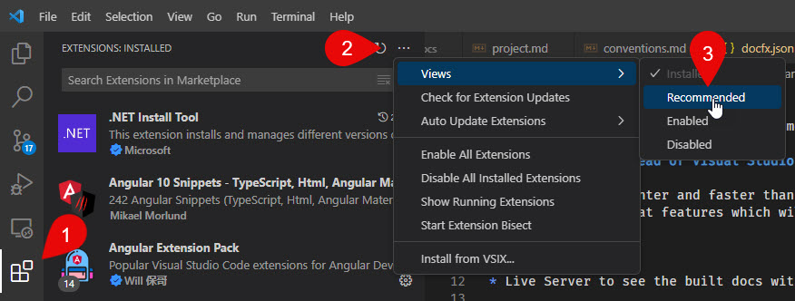
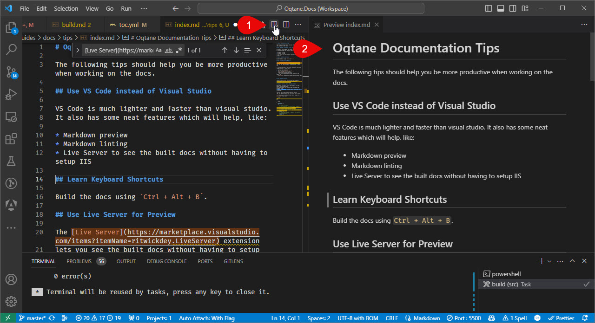
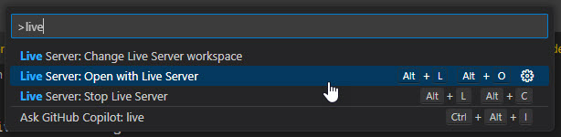

Oqtane Documentation Tips
The following tips should help you be more productive when working on the docs.
Use VS Code instead of Visual Studio
VS Code is much lighter and faster than visual studio. It also has some neat features which will help, like:
- Markdown preview
- Markdown linting
- Live Server to see the built docs without having to setup IIS
Install Recommended Extensions
The VS Code docs project has recommended extensions which will help you be more productive. If you open the project the first time, it will ask you to install them.

To install them later, go to the extensions tab and find the "Show Recommended Extensions".

Use VS Code Preview
VS-Code has a nice preview built in:

But the improved Markdown Preview Enhanced extension is even better, as it even supports Mermaid.
Learn Keyboard Shortcuts
Build the docs using Ctrl + Alt + B.
Use Live Server for Preview
The Live Server extension lets you see the built docs without having to setup IIS.
It also automatically refreshes the browser on every change, making it super-comfy.
- Install the extension
- run it using
Alt + L, Alt + O...
 - ...or by clicking the "Go Live" button in the status bar

Use Markdown Linting
Install the Markdown Lint extension.
Disable Xml-Docs While Editing Content
Rebuilding everything incl. the XML-docs from the Oqtane source code takes much longer than just building the docs from the markdown files. On my PC (iJungleboy) it takes about 32 seconds vs. 10 seconds.
You want fast rebuilds while editing content (eg. not updating docs from the Oqtane source code).
To "temporarily" disable the Xml-Docs, change the /docfx.json file from:
{
"metadata": [
{
// Blank src sample
// This should be used when making changes to the theme and wanting to see changes quickly, as it skips parsing the source code
// To use, rename this to "src" and rename the real src to "dummy-src" while developing, then revert when done
"dummy-src": [],
// Oqtane Source Code - where it will extract the API docs from
"src": [
to
{
"metadata": [
{
// Blank src sample
// This should be used when making changes to the theme and wanting to see changes quickly, as it skips parsing the source code
// To use, rename this to "src" and rename the real src to "dummy-src" while developing, then revert when done
"src": [],
// Oqtane Source Code - where it will extract the API docs from
"-src": [
Tip
Don't forget to undo this change before committing your changes.